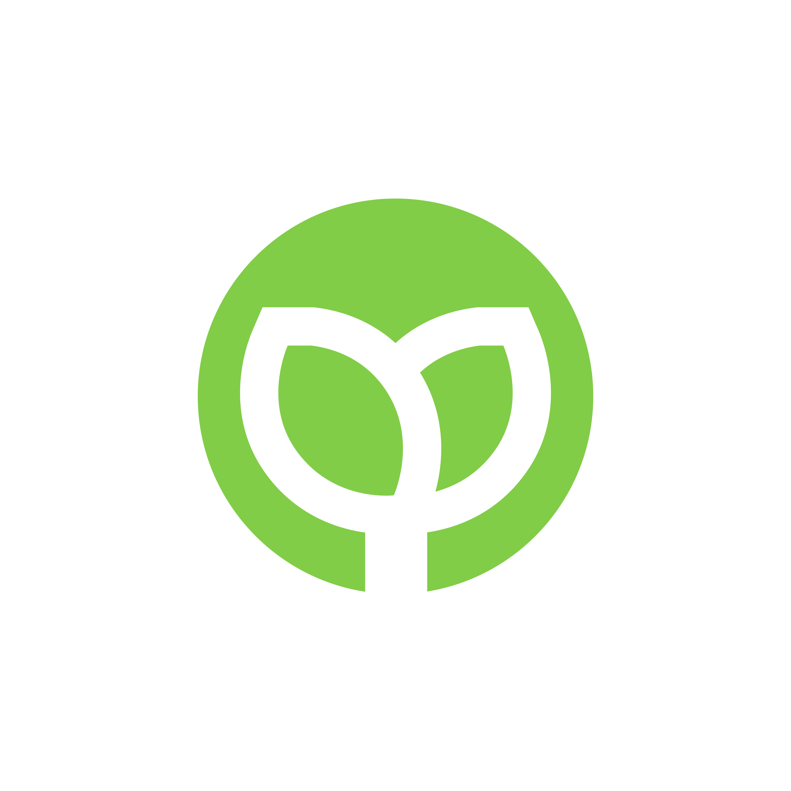
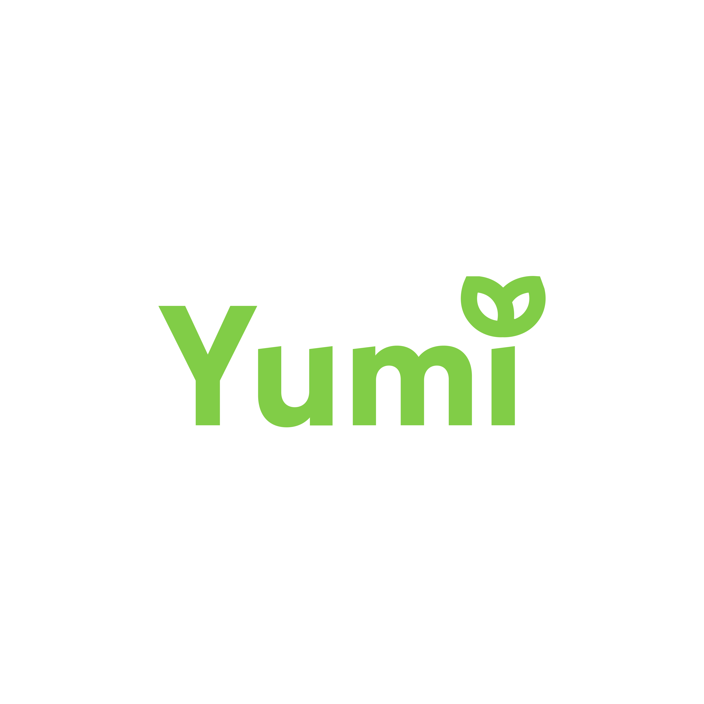
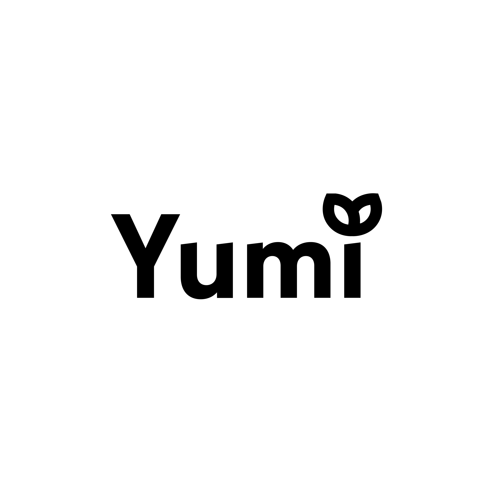
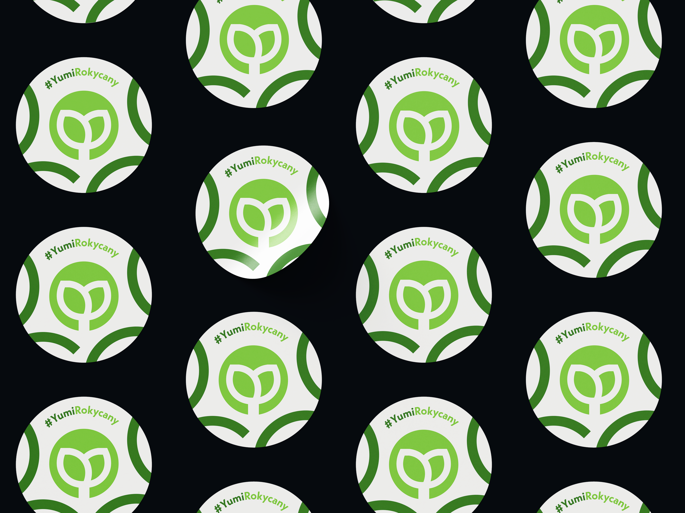
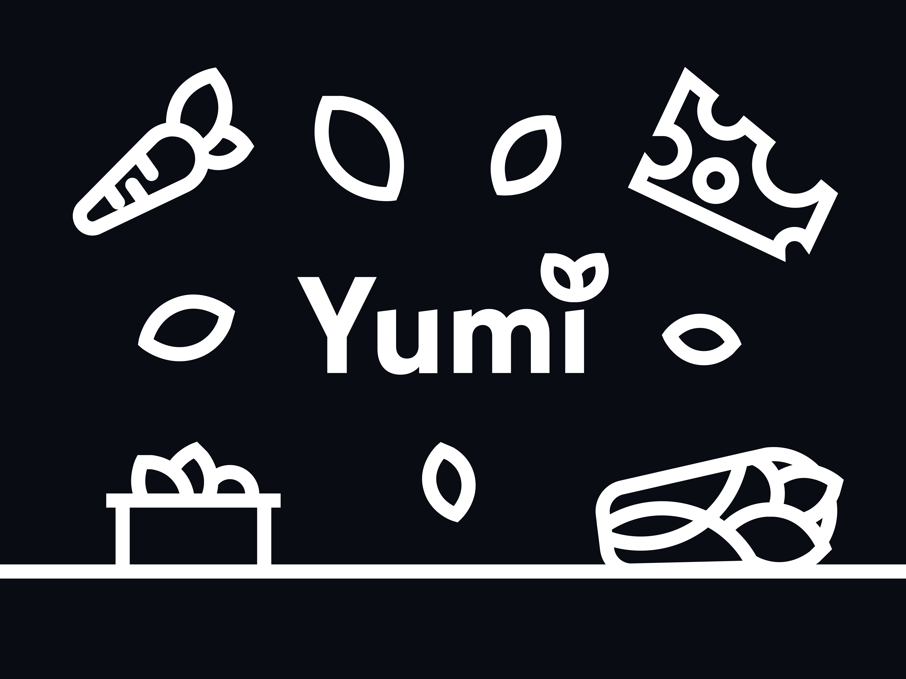

Příprava
— 01
— Cílovou skupinou bistra Yumi jsou všechny věkové kategorie. Vzhledem k tomu, že se jedná o fresh bistro tak se přidávají znaky čerstvosti a zdravé stravy.
— Zelená barva v pozadí je známkou obarvení listů, protože bistro má jako klíčovou surovinu právě listy od salátu.
Design vizuální identity
— 02
— Logo se tvoří z krátkého loga a dlouhého.
— Znak je vytvořen kruhu a v něm jsou listy se stonkem. Listy mají znázorňovat čerstvost a zdravou stravu. Listy jsou v poloze tak, aby se dokázalo vykreslit na logu každé písmenko názvu firmy.
— Dlouhé logo se vytvořilo tak, že se odstranil kruh z krátkého loga a invertovala se výplň. Listy nahrazují tečku u měkkého i.
Finální náhled
— 03




Branding
— 04



— Samolepky - Abstraktní linky
— Ilustrace
— Samolepky - Ilustrace
— Banner(web, sociální sítě) - Krátké logo
— Banner(web, sociální sítě) - Dlouhé logo